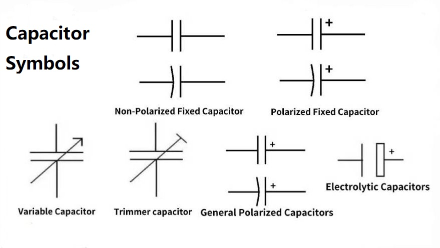
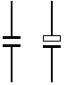
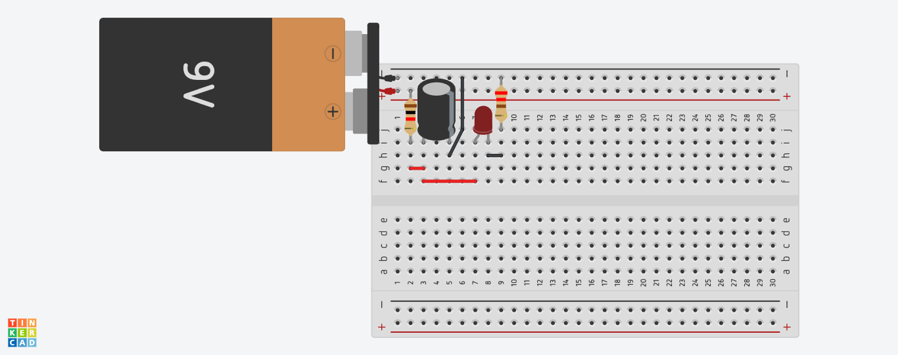

Capacitor

¿Que es?
La capacitancia es una palabra muy conocida en el ámbito de la ingeniería eléctrica y simplemente consiste en almacenar energía.Se expresa en faradios y el capacitor es el instrumentor utilizado para trabajos relacionados con la electricidad y la electrónica, que tenga como objetivo almacenar energia de manera instantanea para ser posteriormente liberada.
Todos estos artefactos tienen la misma estructura: dos placas conductoras separadas por un dieléctrico ubicado entre ambas.
En el dieléctrico se almacena la carga de energía cuando fluye una corriente eléctrica y es por eso que tiene que ser de un material no conductor, como el plástico o la cerámica.
Capacitor
Simbolo Esquematico
¿Para que sirve?
El capacitor es un instrumento que tiene la capacidad de almacenar una carga de energia para que sea almacenada de manera rápida.Muchos tienden a confundir a este elementor con una materia, pero la realidad es que son muy diferentes porque la bateria tiene la capacidad de guardar y generar energía. El condensador, por su parte, almacena energia en forma de campo eléctrico en reposo estático.
La carga y descarga de un capacitor es muy util para, por ejemplo, alimentar un motor eléctrico. También sirven para en mecanismos que requieren de un rápido incremento de energía
En los circuitos en los que el voltaje de una corriente eléctrica fluctua mucho, un capacitor sirve para nivelar el sistema, ya que almacena la energía sobrante cuando el voltaje aumenta. Luego, cuando está en equilibrio, la energia se libera.
Otra destacada función de estos instrumentos; es la de generar retrasos en circuitos eléctricos en aquellas actividades que lo requieren.
Además, se utiliza también en el desarrollo de dispositivos electrónicos porque tiene la capacidad de nivelar los voltajes de una corriente eléctrica.
¿Como funciona?
Un capacitor (o condensador) almacena energía eléctrica temporalmente en un campo electrostatica, funcionando como una báteria de carga rápida y descarga inmediata. Está compuesto por dos placas conductoras separadas por un material aislante (dieléctrico), donde se acumulan cargas opuestas (positiva y negatica) al recibir un voltaje, manteniendo la energía almacenada incluso tras desconectar la fuente.
Caracteristicas Principales
Un capacitor consiste en dos placas conductoras separadas por un dieléctrico, que tiene la función de evitar contacto entre ellas. Estas placas se encuentran asociadas por un circuito, el cual, cuando se quita, el instrumento empieza con el proceso de almacenamiento eléctrico.El capacitor es conocido en el ambiente de la ingeniería como un dispositivo pasivo porque no internienen otras energías o componentes eléctricos. Por su parte, entre los principales beneficios de un capacitor encontramos los siguientes:
- Se obtiene un importante ahorro energético y económico.
- Reduce la magnitud de la corriente que circula mediante los equipos eléctricos.
- Menos desgaste de los equipos elécticos (y, en consecuencia, una mayor vida útil).
- Mejora la potencia de una instalación eléctrica.
- Mejora el voltaje.
Simbolo y Pinout

Simbolo ELectrico

Si aplica, patillaje
Si aplica patillaje, algunos tipos de capacitores tienen un patillaje específico (polaridad), lo que significa que deben conectarse de una manera particular (positivo con positivo, negativo con negativo) para funcionar correctamente y no dañarse. Otros tipos de capacitores no tienen polaridad y pueden conectarse en cualquier dirección.

Ejemplo Practico
Vamos a realizar un ejercicio basico y practico con un capacitor.Lista de componentes
- 1 Bateria de 9v
- 1 Diodo led
- 1 Resistencia de 1kΩ
- 1 Resistencia de 220Ω
- 1 Protoboard
- 1 Capacitor de 1000uF a 9v
- Cables jumper
En la siguiente imagen se muestra un circuito basico de tiempo de ensendido con un capacitor. 
Errores Comunes
Fallas Físicas Visibles
- Capacidad Hinchada: La parte superior abombada indica sobrepresión interna, lo que significa que el componente ya no filtra correctamente.
- Fuga de Electrolito: Presencia de líquido pegajoso cerca de la base o terminales, señal de que el sello interno ha fallado.
- Quemado o Explotado: Causado por sobrecorriente, cortocircuitos o inversión de polaridad, resultando en componentes derretidos o carbonizados.
Fallas Funcionales y Eléctricas:
- Pérdida de Capacidad: El capacitor se "seca" con el tiempo o por calor, perdiendo sus microfaradios (uF) y provocando que el equipo no encienda o se fuerce.
- Cortocircuito Interno: Presenta continudad entre terminales, lo que puede quemar otros componentes de la placa.
- Alta ESR (Resistencia Serie Equivalente): Aun que parezca funcional en un capacímetro, una ESR elevada (común en fuentes conmutadas) impide su correcta filtración.
Causas Externas Comunes:
- Temperatura Extrema: Funcionar por encima de sus limites térmicos reduce drásticamente su vida útil.
- Voltaje Incorrecto: Usar un capacitor con un voltaje nominal o inferior al requerido.
- Mala Conexion: Falsos contactor que generan arcos eléctricos.